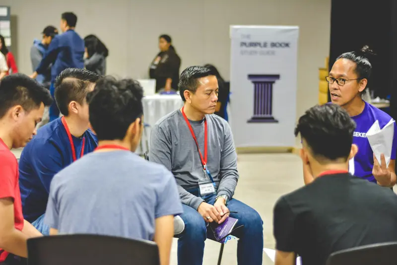

Academia
Formate como coach con la Certificación en Liderazgo Ontológico Organizacional. 100% virtual.
Quiero formarme
Formate en la academia, conectá con otros coaches y practicá en empresas. Desde el día que empezás ya sos parte del networking.
Una red de coachesque se sostienen entre sí
Academia desde el 15 de marzo100% virtual
La academia te abre a todo el ecosistema del coach. Si ya sos coach, empezá por el espacio que prefieras.
Formate como coach con la Certificación en Liderazgo Ontológico Organizacional. 100% virtual.
Quiero formarme
El espacio para estudiantes. Aprendé, preguntá y practicá con otros estudiantes. No importa dónde estudies.
Sumarme al Junior
Encuentros entre coaches de distintas profesiones. Compartí experiencia y hacé crecer tu red.
Quiero sumarme
Practicá dentro de una empresa como observador. El punto más alto del recorrido: ejercer como coach adentro de una organización.
Quiero practicar
Dejá de ser observador y sé protagonista: creá tu propia mesa en tu ciudad, con el sello de NP+.
Quiero crear mi mesaY ahí empiezan las preguntas que nadie te responde.

En NP+ el sostén no espera al título. Arranca el primer día.
No es solo una certificación. Aprendés a acompañar a líderes y equipos, con toda la red sosteniéndote desde el primer día.
Sesiones de coaching individuales y grupales dentro de una organización.
Ver qué hay detrás de un conflicto y cambiar la conversación.
Hacer crecer tu contacto profesional.
Sumate a NP+ desde cualquier país. Una red de coaches que se encuentra, se recomienda y crece junta.
NP+ es una red de grupos que se encuentran, se recomiendan y trabajan juntos.

Socio fundador
Coach Profesional Acreditado (CPA) por la CIC
Acompaño a organizaciones y personas a desplegar su potencial y su liderazgo. Con sesiones, talleres y conferencias fortalezco competencias, mejoro la productividad y el bienestar, y consolido equipos de alto rendimiento.

Socio fundador
Coach Ontológico y PNL
Acreditado por la CIC
Transformo equipos operativos que dependen del control constante en sistemas de trabajo claros, con roles y conversaciones que funcionan.
Avalados por la CFF
Escribinos y te contamos todo. Te responde una persona del equipo, no un bot.
Inscripciones abiertas
La inversión y las formas de pago te las pasamos por mensaje directo, junto con el programa completo.
NP+ es un ecosistema de coaches con cinco espacios: la Academia, el Networking de profesionales, el Networking Junior para estudiantes, las Empresas donde practicar y las Mesas de desarrollo en otras provincias. Podés empezar por el que quieras.
Sí. El Networking de profesionales está pensado para coaches que ya ejercen. Escribinos y te contamos cómo sumarte.
No, y desconfiá de quien lo prometa. Lo que sí te damos es práctica en empresas, mentorías y una red de contactos desde el primer día. La contratación la decide cada empresa.
Sí. La academia es 100% virtual, con clases en vivo por Zoom y material online. El networking de profesionales es presencial en Buenos Aires.
Seguís en la red. Pasás al networking de profesionales y podés crear tu propia mesa de desarrollo en tu ciudad, con el sello de NP+.
Sí. El Networking Junior está abierto a estudiantes de cualquier academia de coaching, con una membresía. No importa dónde estudies.

Formar más Sostener
Acá el protagonista sos vos. Escribinos y te contamos todo en una charla corta.